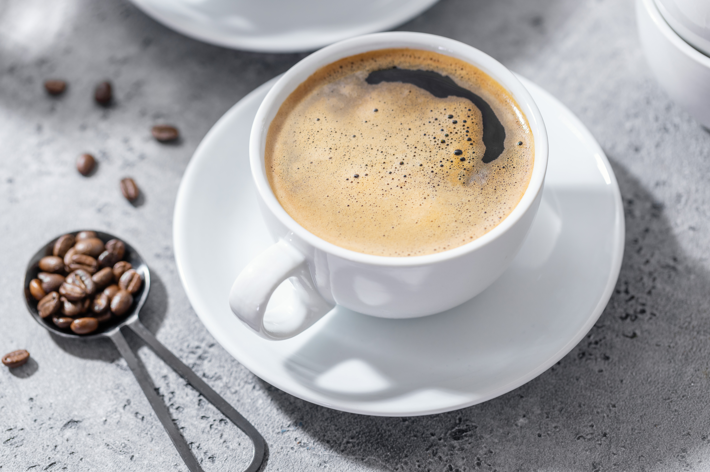

Welcome to Bean & Brew Coffee House
Fresh Coffee, Good Food and Place to Unwind
Bean & Brew Coffee House is dedicated to provide its clientèle with high quality coffee, freshly prepared meals and an opportunity to unwind.
Explore Our MenuOur Coffee Shop
A Cup Made With Care
The menu of the establishment includes various coffee specialties, cold drinks, meals and desserts.
Our baristas take pride in every cup of coffee they prepare for our clients. With a focus on specialty coffee, we offer a variety of coffee blends including the classic lattes and cappuccinos, as well as cold brew and other refreshments.
Quality, Service & Cleanliness
Our staff is always willing to meet the clients’ expectations while upholding the highest standards of quality, service, and cleanliness.
At Bean & Brew Coffee House, we believe in giving our customers exactly what they ask for and providing them with eye-catching options.
Something for Everyone
Variety to Suit All Tastes
At our coffee house, we have a variety of drinks and meals for our clients to choose from. The menu includes:
Espresso and Americano
Classic coffee choices for a simple and familiar cup.
Cappuccino and Latte
They feel warm and gentle, on the tongue.
Mocha and flavored coffee
Options for customers looking for a sweeter coffee experience.
Cold brew and Iced Coffee
Cold choices for a refreshing coffee break.
Tea & Other Drinks
Drinks for those who prefer something other than coffee.
Fresh Pastries & Meals
Food choices to enjoy alongside your favorite beverage.
More Than Coffee
Your Community Coffee Shop
A community coffee shop should be a place where people feel most comfortable. While for some of them it means spending their free time there, others may prefer reading in the peace of their own home.
Our coffee shop aims to be your favorite place to spend your leisure time and provide our clients with their favorite cup of coffee.
In my opinion, our customers should be our priority, which means that we are supposed to fulfill their needs and wants by offering our high-quality meals and beverages and making them feel most welcome.
Bean & Brew Coffee House
A comfortable place for coffee, meals and time with friends.
For those seeking a new coffee shop to spend time with friends or have some free time for themselves, Bean & Brew Coffee House is the best choice as we provide our clients with coffee, meals, and a comfortable atmosphere.
Learn More About Us